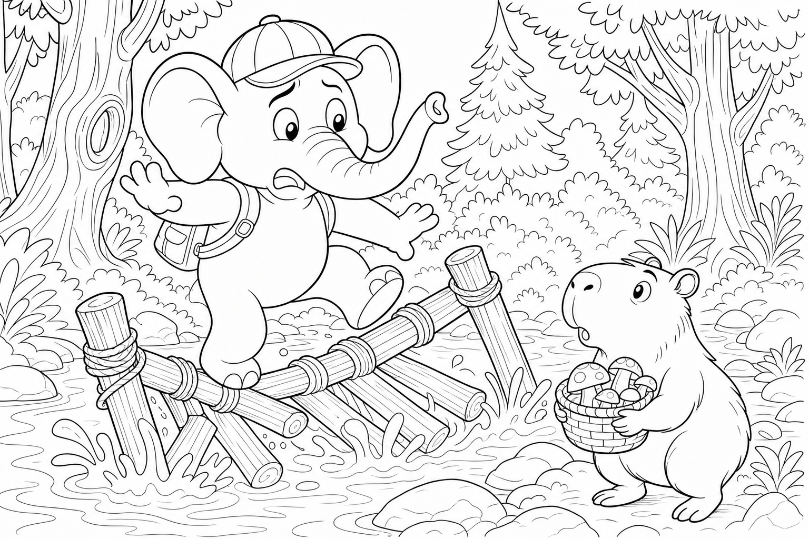

Cerca questa immagine in fondo al libro per colorarla come preferisci. Ricorda: le alghe verdi sotto i tronchi e il cesto nuovo di salice.
C'era una volta un Elefante di nome Franco, che gli amici chiamavano ... EleFranco. Di cognome faceva Franchini. Abitava nella sua accogliente casa nel paesino di FrancaVilla, un borgo ai margini di un bosco profumato di muschio e pinoli, dove i funghi crescevano come ombrellini gentili sotto le felci, i ruscelli cantavano basso tra le radici e la nebbia mattutina sembrava vapore di zuppa calda.
Era una mattina umida e EleFranco aveva una commissione semplice: «Devo andare dal cestaio a prendere un cesto nuovo per raccogliere i funghi! Il vecchio ha le stecche storte e la pioggia di stanotte l'ha lasciato molle.» Si calzò i suoi stivali giganti da bosco, verdi e con la suola a rilievi di foglia, prese il vecchio cesto malconcio e uscì di casa. Il sentiero di terra morbida tremava piano: THUMP THUMP THUMP Arrivato al ruscello che tagliava il bosco, vide un capibara rotondo e pacifico seduto sulla riva con le zampe in acqua.
Era Fungo il Capibara, calmo come una pietra liscia, ma quella mattina sospirava forte. «EleFranco, che pasticcio,» mormorò. «Il ponte di tronchi è allagato e scivoloso. Devo portare le erbe aromatiche dall'altra parte per la minestra del bosco, ma ogni volta scivolo e finisco con le quattro zampe in aria!»
EleFranco posò il cesto e guardò i tronchi galleggianti. «Non ti preoccupare, Fungo. Attraverso io per primo e ti faccio vedere dove mettere i piedi.» Ma mentre metteva un piede sul primo tronco, la mente cominciò a vagare: pensò ai funghi porcini, al cesto nuovo intrecciato, al profumo di zuppa che avrebbe riempito la casa.
Stava quasi per fare un passo lungo quando il tronco scricchiolò sinistro. Allora l'elefante scosse le grandi orecchie e disse ad alta voce la sua parola magica: "FOCUS!"«Piano, EleFranco. Un ponte si prova un passo alla volta.» Si spostò con cura, ma era pesante e generoso: i tronchi affondarono, l'acqua salì e un getto di fango gentile spruzzò su entrambe le rive, imbrattando foglie, muso del capibara e persino il ciuffo nero dell'elefante.
«Ops,» disse EleFranco. «Ora sembriamo due pan di spagna al cacao.» Fungo però notò qualcosa: delle alghe verdi, staccate dal fondo, erano rimaste appese alle zanne dell'elefante e galleggiavano ora sotto i tronchi come piccoli cuscini antiscivolo. «Guarda!» esclamò.
«Hai creato dei salvagente naturali!» Uno dopo l'altro, gli animali del bosco attraversarono sulle alghe morbide: prima un rosso pettirosso con un ramoscello, poi due ricci con le mele, poi Fungo stesso con le erbe aromatiche in equilibrio perfetto sulla schiena rotonda. Il cestaio, arrivato di corsa con un ombrello di foglie, regalò a EleFranco un cesto nuovo impermeabile intrecciato con salice lucido, grande abbastanza per cento funghi e profumato di resina. «Per chi rende sicuro il cammino degli altri,» disse, «il cesto è in regalo.
E guarda: il fango sul tuo ciuffo sembra un cappello da raccoglitore professionista!» La missione era compiuta senza nemmeno contare le monete: il cesto era lì, profumato di bosco e gratis, e il ponte era di nuovo sicuro.
EleFranco capì allora la morale di quella giornata: Chi va piano sul ponte lo rende sicuro per tutti. 🌉
EleFranco raccolse un fungo rosso come regalo per Fungo, se lo mise nel cesto nuovo e scoppiò nella sua famosa risata: OH... OH... OH...